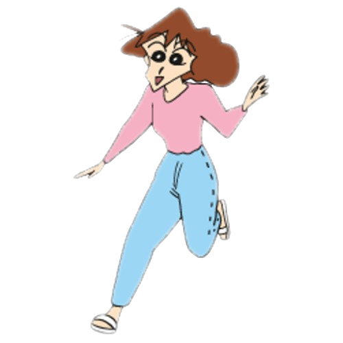
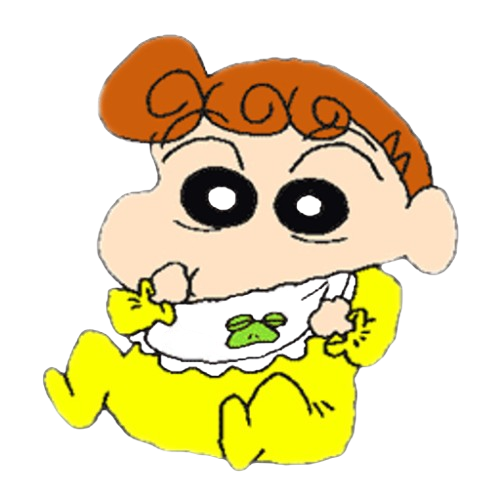
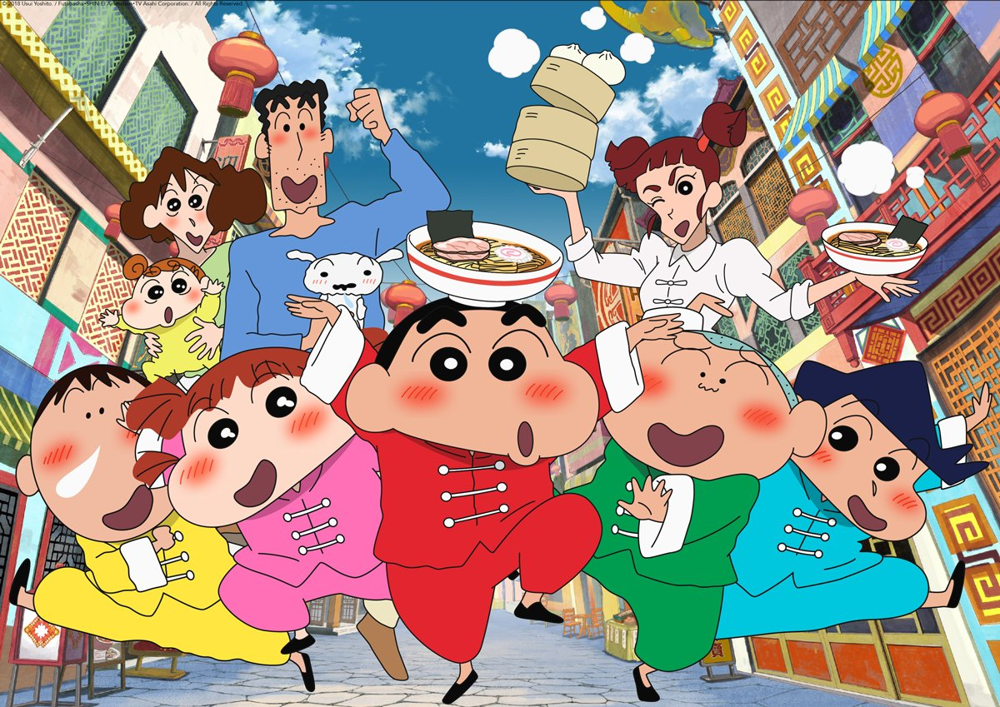

SinChan Quiz
Shin Chan es una serie japonesa de comedia que sigue las travesuras de Shinnosuke Nohara, un niño de cinco años con una personalidad desbordante, incansable y adorable. Junto a su familia y amigos, vive situaciones disparatadas que mezclan humor absurdo con una mirada irónica de la vida cotidiana. ¿Cuánto sabés sobre este personaje inolvidable?
En este tema conocerás los datos esenciales del pequeño terremoto japonés: Shinnosuke Nohara, más conocido como Shin Chan. Tiene solo cinco años, pero parece que vive hace treinta. Vive en Kasukabe, tiene un perro que parece más listo que él (¡y eso no es difícil!), y un don natural para meter a su mamá en problemas... ¡y a su papá en deudas! También hay que destacar que sus mayores debilidades son las mujeres, las galletitas y, por supuesto… ¡Ultrahéroe!
Bienvenidos al zoológico más alocado de Japón: no tiene jaulas, pero sí criaturas únicas. Shin Chan es el líder del grupo, experto en bailes ridículos, comentarios inapropiados y en poner a prueba la paciencia de los adultos. Misae, su madre, puede pasar del amor maternal al grito destructor en un segundo. Le encantan las telenovelas, las rebajas y, sobre todo, dar unos buenos capones. Hiroshi, su padre, el honorable trabajador… cuyo mayor talento es llegar tarde. Una de sus virtudes es que puede desmayar a cualquiera con el olor de sus pies. Himawari, la bebé del caos: pequeña, adorable y peligrosa. Probablemente sea la mayor amante de las joyas y de los chicos guapos de toda la ciudad. Nevado es el perro de la familia. Tiene el mayor coeficiente intelectual de la casa y es el único capaz de aguantar a Shin Chan sin perder la cordura. Y por último, pero no menos importante, tenemos al glorioso y caótico Ejército Revolucionario de Kasukabe, formado por Shin Chan, Kazama, Nene, Bo-chan y Masao. Su misión es clara: hacer de cada día una aventura absurda, jugar a papás y mamás como si fuera una telenovela, y llevar al borde del colapso nervioso a todas sus seños de la guarde.
Prepárate para un espectáculo como ningún otro. En este tema vas a descubrir el lado más artístico de Shin Chan (si es que se le puede llamar así). Entre bailes imposibles, canciones inventadas y puestas en escena que harían llorar a cualquier profesor de música, este niño transforma lo cotidiano en un verdadero festival del absurdo. Desde su legendario “baile del culo” hasta el mítico momento trompa, trompa, trompa trompa..., cada actuación es una mezcla de descontrol y comedia involuntaria. Y como si fuera poco, en uno de sus momentos más emocionalmente desconcertantes, Shin Chan se despacha cantando “Al partir un beso y una flor”, como si fuera Nino Bravo en versión miniatura con pañales. Y no está solo: sus amigos, sus padres, y hasta los vecinos acaban envueltos en este musical sin guion… y sin vergüenza.Prepárate para un espectáculo como ningún otro. En este tema vas a descubrir el lado más artístico de Shin Chan (si es que se le puede llamar así). Entre bailes imposibles, canciones inventadas y puestas en escena que harían llorar a cualquier profesor de música, este niño transforma lo cotidiano en un verdadero festival del absurdo. Desde su legendario “baile del culo” hasta el mítico momento trompa, trompa, trompa trompa..., cada actuación es una mezcla de descontrol y comedia involuntaria. Y como si fuera poco, en uno de sus momentos más emocionalmente desconcertantes, Shin Chan se despacha cantando “Al partir un beso y una flor”, como si fuera Nino Bravo en versión miniatura con pañales. Y no está solo: sus amigos, sus padres, y hasta los vecinos acaban envueltos en este musical sin guion… y sin vergüenza.